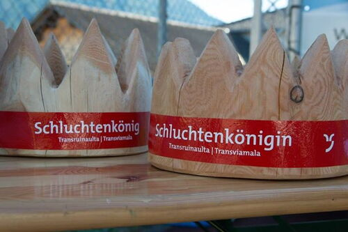

Alpinrunner
Transruinaulta/Transviamala
Samstag 21. Oktober Transruinaulta 42 Km / 24 Km
Sonntag 22. Oktober Transviamala 19 Km / 11.5 Km

bereits angemeldete Alpinrunner
teilgenommene Alpinrunner/innen :
Maria Conrad, Röbi Conrad, Claudia Conrad, Alexandra Stölzel, Micheline Pang, Jean Marie Zogg, Noldi Grischott, Maria Eckert, Marco Jäger